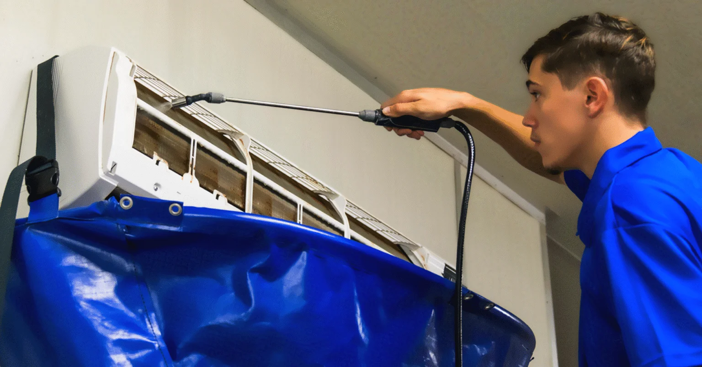

تركيب مكيفات سبليت جنوب الرياض 0559865517

في ظل الأجواء الحارة التي تشهدها جنوب الرياض في فصل الصيف، يُعد تركيب مكيفات سبليت جنوب الرياض أمرًا بالغ الأهمية للحفاظ على راحة السكان وجودة الهواء داخل المنازل والمكاتب، تعتبر مكيفات سبليت من المكيفات التي تتميز بكفاءته العالية في التبريد وتوزيع الهواء بشكل متوازن، بالإضافة إلى كونه أكثر هدوءًا وأقل استهلاكًا للطاقة مقارنة بالمكيفات التقليدية، لضمان أن عملية التركيب تتم بشكل صحيح، عليك الاستعانة بأفضل شركة تركيب مكيفات سبليت جنوب الرياض “شركة نقل الرياض” ، حيث توفر الشركة فنيين مدربين على أعلى مستوى، استخدام أحدث الأدوات في التركيب مما يضمن لك عم المكيف بأعلى أداء، لذلك تواصل مع شركة نقل الرياض واستمتع بأجواء ممتعة في بيتك أو مكتبك.
افضل شركة فك وتركيب مكيفات بالرياض بسعر منافس 0559865517
أهمية تركيب مكيفات سبليت جنوب الرياض في مواجهة حرارة الصيف
في جنوب الرياض، حيث تصل درجات الحرارة في الصيف إلى مستويات مرتفعة جدًا، يصبح تركيب مكيفات سبليت ضرورة وليست رفاهية، وذلك لأن هذه المكيفات تتميز بقدرتها العالية على التبريد السريع حتى في الأجواء شديدة الحرارة، مما يضمن بيئة مريحة داخل المنزل أو المكتب، إليك مميزات تركيب مكيفات سبليت جنوب الرياض:
- كفاءة عالية في التبريد حتى مع ارتفاع درجات الحرارة.
- توزيع متساوٍ للهواء البارد في جميع أرجاء الغرفة.
- تشغيل هادئ بدون ضوضاء مزعجة، مما يوفر أجواء هادئة ومريحة.
- استهلاك أقل للطاقة مقارنة بالمكيفات التقليدية، مما يساهم في تقليل فاتورة الكهرباء.
- تصميم عصري وأنيق يناسب جميع أنواع الديكورات الداخلية.
- سهولة الصيانة وإمكانية إضافة فلاتر لتنقية الهواء من الغبار والشوائب.
وبفضل هذه المميزات، فإن تركيب مكيفات سبليت جنوب الرياض يضمن لك صيفًا أكثر راحة وانتعاشًا، مع الاستفادة من أداء قوي يدوم لسنوات ويساعدك على التغلب على حرارة الصيف في الرياض.
تنظيف مكيفات حي السويدي الرياض
مميزات الاعتماد على خدمة تركيب مكيفات سبليت جنوب الرياض
الاعتماد على خدمة تركيب مكيفات سبليت جنوب الرياض من شركة متخصصة في هذا المجال مثل شركة نقل الرياض يمنحك الكثير من المميزات التي تضمن لك أداء فعال لمكيفك في الصيف، إليك أبرز هذه المميزات:
- تركيب احترافي ودقيق يضمن عمل المكيف بكفاءة عالية منذ اليوم الأول ويدوم لفترات طويلة.
- اختيار المكان الأمثل للوحدات الداخلية والخارجية لتحقيق أفضل توزيع للهواء وتوفير استهلاك الطاقة.
- استخدام أدوات ومعدات حديثة تحافظ على سلامة المكيف والجدران أثناء التركيب.
- ضبط الإعدادات والفحص بعد التركيب للتأكد من خلو النظام من أي أعطال أو تسريبات.
- توفير ضمان على الخدمة يمنحك راحة البال وثقة في جودة العمل.
- نصائح متخصصة للصيانة الدورية للحفاظ على عمر المكيف وإبقائه بأعلى أداء ممكن.
- خدمة سريعة وموثوقة تناسب الأجواء الحارة في جنوب الرياض، حيث لا مجال للتأخير في التبريد.
خطوات احترافية في تركيب مكيفات سبليت جنوب الرياض
اختيار شركة احترافية، لديها خبرة واسعة في مجال تركيب مكيفات السبليت مثل شركة نقل الرياض يضمن لك أداء مثالي لمكيفك، الحفاظ على العمر الافتراضي له لأطول فترة ممكنة، إليك خطوات تركيب مكيفات سبليت جنوب الرياض:
- فحص الموقع قبل التركيب لاختيار أفضل موقع به تهوية جيدة.
- تحديد موضع الحامل وتثبيته باستخدام ميزان لضمان الاستقامة، التأكد من تثبيته.
- حفر فتحة مخصصة بزاوية لتمرير أسلاك الكهرباء، أنابيب التبريد.
- تركيب الوحدة الداخلية بعناية مع التأكد من عدم اهتزازها.
- تثبيت الوحدة الخارجية في مكان مناسب مع مراعاة وجود مسافة كافية للتهوية، ضمان تبريد فعال.
- توصيل الأنابيب والكابلات بين الوحدتين بإحكام.
- إفراغ الهواء من النظام (Vacuum) باستخدام مضخة تفريغ الهواء للتأكد من خلو النظام من أي رطوبة أو هواء يعيق عمل المكيف.
- التشغيل والفحص النهائي للتأكد من كفاءة التبريد.
افضل شركة تنظيف مكيفات بالرياض
أفضل فنيين وشركات تركيب مكيفات سبليت جنوب الرياض
عند البحث عن أفضل فنيين وشركات تركيب مكيفات سبليت جنوب الرياض، ستجد أن الجودة والخبرة عاملان أساسيان لضمان أداء مثالي للمكيف على المدى الطويل، فاختيار الشركة المناسبة يعني الحصول على تركيب دقيق يراعي معايير السلامة ويضمن كفاءة التبريد حتى في أشد أيام الصيف حرارة، وهنا تبرز شركة نقل الرياض كخيار موثوق، حيث توفر فريق فنيين مدرَّب على أحدث تقنيات التركيب، مع استخدام أدوات احترافية وخدمة سريعة بأسعار مناسبة، مع شركة نقل الرياض، ستحصل على راحة البال وجودة العمل من أول مرة، تواصل الأن مع الشركة واضمن أفضل أداء لمكيفك.
أسعار تركيب مكيفات سبليت جنوب الرياض
تختلف أسعار شركات تركيب مكيفات سبليت جنوب الرياض بناءً على عدة عوامل منها نوع الخدمة المطلوبة: هل هي تركيب فقط أم فك مكيف قديم وتركيب مكيف آخر جديد، أم شحن فريون، طول مسافة التمديد بين الوحدة الداخلية والخارجية، يختلف أيضًا حسب رقم الدور.
كما تختلف الأسعار أيضًا على حسب عدد الوحدات المطلوب تركيبها، المعدات الخاصة المستخدمة، كل هذه العوامل تؤثر على سعر الخدمة، إذا كنت تبحث عن شركة تقدم لك جميع هذه الخدمات بأسعار تنافسية فإن شركة نقل الرياض هي أفضل خيار لك، لا تتردد وتواصل مع الشركة الأن.
نصائح مهمة قبل البدء في تركيب مكيفات سبليت جنوب الرياض
قبل البدء في تركيب مكيفات سبليت جنوب الرياض، من المهم اختيار النوع المناسب بعناية لضمان أفضل أداء وتوفير في الطاقة.
- أولًا: حدد قدرة التبريد المطلوبة بناءً على مساحة الغرفة، فالمكيف ذو القدرة المناسبة يضمن توزيع الهواء بشكل مثالي.
- ثانيًا: اختر ماركة موثوقة مثل دايكن أو إل جي أو سامسونج، مع التأكد من توفر قطع الغيار وخدمات الصيانة في الرياض.
- ثالثًا:راقب استهلاك الطاقة وابحث عن الموديلات الموفرة للكهرباء (بتقنية الانفرتر).
- رابعًا: فكر في مستوى الضجيج خاصة إذا كان المكيف لغرفة نوم أو مكتب.
- خامسًا: لا تتردد في الاستعانة بخبراء شركة نقل الرياض لتقديم استشارة مجانية حول الأنسب لاحتياجاتك وتركيبه باحترافية تضمن راحة طويلة الأمد.
كيف تختار نوع المكيف المناسب قبل التركيب جنوب الرياض؟
اختيار نوع المكيف المناسب قبل التركيب في جنوب الرياض يعتمد على عدة عوامل تضمن لك راحة وكفاءة طويلة المدى.
- حدد مساحة الغرفة التي سيُركب فيها المكيف، فكل مساحة تحتاج قدرة تبريد محددة تُقاس بالـ BTU؛ الغرف الصغيرة قد يكفيها مكيف 1.5 حصان، بينما المساحات الأكبر تحتاج قدرة أعلى.
- انتبه إلى كفاءة استهلاك الطاقة واختر موديل يحمل تصنيف عالي في توفير الكهرباء (نجوم الهيئة السعودية للمواصفات والمقاييس).
- ضع في اعتبارك ظروف المناخ الحار في جنوب الرياض، فاختر مكيفات تتحمل درجات الحرارة العالية وتعمل بكفاءة في الظروف القاسية.
- حدد الماركة وخدمات الضمان؛ العلامات الموثوقة توفر قطع غيار وخدمة صيانة أفضل.
- تأكد من اختيار فني تركيب محترف لضمان تركيب سليم يحافظ على كفاءة الجهاز.
خدمات ما بعد تركيب مكيفات سبليت جنوب الرياض (صيانة وتنظيف)
خدمات ما بعد تركيب مكيفات سبليت جنوب الرياض لا تقل أهمية عن عملية التركيب نفسها، فهي تضمن استمرار أداء الجهاز بكفاءة عالية وإطالة عمره الإفتراضي، وتشمل هذه الخدمات الصيانة الدورية التي يتم خلالها فحص ضغط الغاز، التأكد من سلامة الأسلاك الكهربائية، ومعالجة أي أعطال قبل أن تتفاقم، كما تتضمن خدمة تنظيف المكيفات، حيث يتم تنظيف الفلاتر و المبخر والمكثف لإزالة الأتربة والأوساخ التي قد تعيق تدفق الهواء وتقلل من كفاءة التبريد، خاصة في الأجواء المغبرة التي قد تشهدها مناطق جنوب الرياض، بعض الشركات تقدم أيضًا خدمة التعقيم للتخلص من البكتيريا والروائح غير المرغوبة داخل الوحدة، الاهتمام بخدمات ما بعد التركيب يعني توفير هواء بارد ونظيف مع تقليل استهلاك الطاقة وفواتير الكهرباء، يُمكنك الحصول على جميع هذه الخدمات بأسعار تنافسية من خلال شركة نقل الرياض، لذلك بادر بالتواصل الأن مع الشركة من خلال 0559865517.
في الختام، لقد تعرفنا على كل ما يخص تركيب مكيفات سبليت جنوب الرياض، أهمية الاهتمام بخدمات ما بعد التركيب من صيانة وتنظيف، وذلك للحصول على أفضل أداء للمكيف تدوم لسنوات طويلة، إذا كنت من سكان جنوب الرياض، تبحث عن الراحة والهواء النقي في منزلك أو مكتبك، فإن الاستعانة بشركة نقل الرياض أفضل شركة تركيب مكيفات سبليت جنوب الرياض تمنحك الحل الأمثل بأعلى جودة وأقل تكلفة.
الأسئلة الشائعة حول تركيب مكيفات سبليت جنوب الرياض
ما هو سعر تركيب مكيف سبليت بالرياض؟
يختلف سعر تركيب مكيف سبليت باختلاف الخدمات ، هل هي تركيب مكيف فقط، أم فك مكيف قديم وتركيب مكيف جديد، لذلك تواصل مع شركة نقل الرياض لتبلغك بالأسعار الدقيقة.
كم يستغرق تركيب مكيف سبليت؟
يستغرق تركيب مكيف سبليت من ساعتين إلى أربع ساعات، تختلف بإختلاف حجم المكيف، عدد الوحدات الداخلية والخارجية، مدى جاهزية المكان للتوصيلات الكهربائية، وأنابيب الفريون.